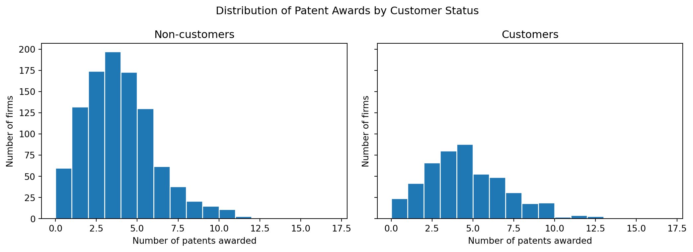
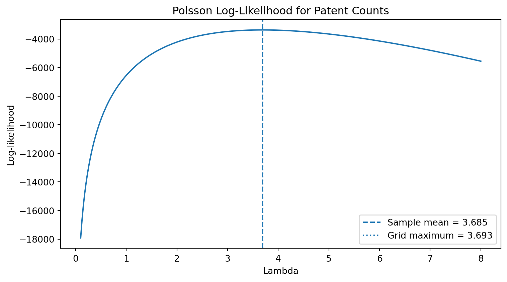
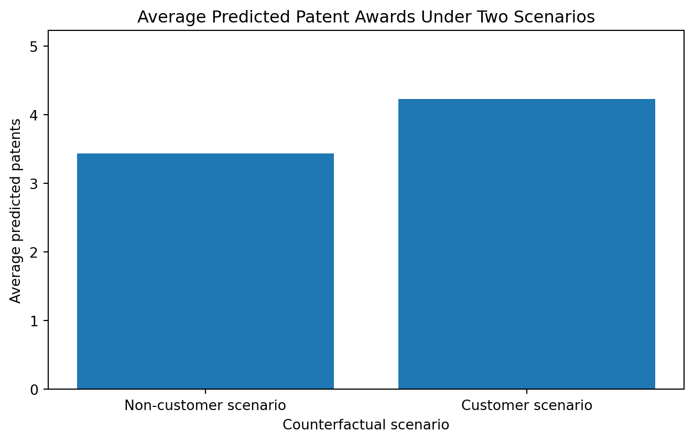
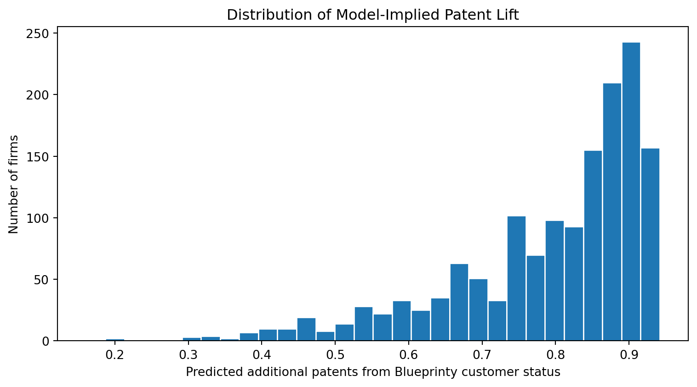

Poisson Regression and Maximum Likelihood Estimation
A Case Study of Blueprinty’s Software and Patent Awards
Author
Runyu Luo
Published
May 17, 2026
Introduction
::: Blueprinty is a small software company that develops tools to help engineering firms prepare blueprints for patent applications. Its marketing team wants to know whether firms that use Blueprinty’s software are more successful in receiving patent awards.
This question is important but not straightforward. The ideal analysis would compare the same firms before and after adopting Blueprinty’s software. However, that type of before-and-after data is not available. Instead, Blueprinty has collected data on 1,500 mature engineering firms, including each firm’s number of patents awarded over the past five years, its age, region, and whether it uses Blueprinty’s software.
Because Blueprinty’s customers are not randomly selected, a simple comparison between customers and non-customers may be misleading. Customers may differ from non-customers in firm age, regional location, or other characteristics that also affect patent outcomes. This analysis therefore uses Poisson regression and maximum likelihood estimation to estimate the association between Blueprinty usage and patent awards while controlling for observable firm characteristics.
:::
Exploring the Data
::: First, I load the Blueprinty customer data and inspect the main variables used in the analysis.
Code
import pandas as pdimport numpy as npimport matplotlib.pyplot as pltimport seaborn as snsfrom scipy import optimizefrom scipy.special import gammalnimport statsmodels.api as smblueprinty = pd.read_csv("blueprinty.csv")blueprinty.head()
patents
region
age
iscustomer
0
0
Midwest
32.5
0
1
3
Southwest
37.5
0
2
4
Northwest
27.0
1
3
3
Northeast
24.5
0
4
3
Southwest
37.0
0
iscustomer
count
mean
std
0
Non-customer
1019
3.473013
2.225060
1
Customer
481
4.133056
2.546846

The regional comparison shows that Blueprinty’s customers are not distributed across regions in the same way as non-customers. Customers are especially concentrated in the Northeast. Firm age also differs slightly across groups. These differences matter because region and age may both be related to patent output. To make a more meaningful comparison, the regression model below controls for these observable firm characteristics.
:::
A Simple Poisson Model via Maximum Likelihood
:::
The outcome variable in this case is a count: the number of patents awarded to each firm over the past five years. Count outcomes cannot be negative and must be integer-valued, so a Normal distribution is not a natural starting point. A Poisson distribution is more appropriate because it is designed for non-negative integer outcomes such as purchases, claims, visits, or patent awards.
For a random variable \(Y \sim \text{Poisson}(\lambda)\), the probability mass function is:
This log-likelihood tells us how plausible different values of \(\lambda\) are given the observed patent counts. The maximum likelihood estimate is the value of \(\lambda\) that maximizes this expression.
Code
import numpy as npimport matplotlib.pyplot as pltfrom scipy import optimizefrom scipy.special import gammalnY = blueprinty["patents"].to_numpy()def poisson_loglikelihood(lam, Y):""" Compute the Poisson log-likelihood for a single rate parameter lambda. """if lam <=0:return-np.infreturn np.sum(Y * np.log(lam) - lam - gammaln(Y +1))
The next plot evaluates the log-likelihood over a range of possible values of \(\lambda\).
Code
lambda_grid = np.linspace(0.1, 8, 300)loglik_values = [poisson_loglikelihood(lam, Y) for lam in lambda_grid]lambda_mle_visual = lambda_grid[np.argmax(loglik_values)]sample_mean = Y.mean()plt.figure(figsize=(8, 4.5))plt.plot(lambda_grid, loglik_values)plt.axvline(sample_mean, linestyle="--", label=f"Sample mean = {sample_mean:.3f}")plt.axvline(lambda_mle_visual, linestyle=":", label=f"Grid maximum = {lambda_mle_visual:.3f}")plt.title("Poisson Log-Likelihood for Patent Counts")plt.xlabel("Lambda")plt.ylabel("Log-likelihood")plt.legend()plt.tight_layout()plt.show()

The curve reaches its maximum around the sample mean of the patent counts. This visual result makes sense because the mean of a Poisson distribution is \(\lambda\). In other words, the value of \(\lambda\) that makes the observed patent counts most likely is the average number of patents in the sample.
We can also show this result mathematically. Starting from the log-likelihood,
So for the simple Poisson model with one common rate parameter, the MLE is exactly the sample mean.
Code
def negative_loglikelihood_log_lambda(log_lam, Y):""" Optimize over log(lambda) so lambda is always positive. """ lam = np.exp(log_lam[0])return-poisson_loglikelihood(lam, Y)simple_result = optimize.minimize( negative_loglikelihood_log_lambda, x0=np.array([np.log(Y.mean())]), args=(Y,), method="BFGS")lambda_mle_numeric = np.exp(simple_result.x[0])pd.DataFrame({"Estimate": ["Sample mean", "Numerical MLE"],"Value": [sample_mean, lambda_mle_numeric]})
Estimate
Value
0
Sample mean
3.684667
1
Numerical MLE
3.684667
The numerical MLE is essentially identical to the sample mean. This provides a useful check that the likelihood function and optimizer are working correctly before extending the model to include firm-level predictors. :::
Poisson Regression
The simple Poisson model assumes that all firms share the same expected patent count, \(\lambda\). That is too restrictive for this case because patent activity likely differs across firms. Older firms, firms in different regions, and firms that use Blueprinty’s software may have different expected numbers of patent awards.
A Poisson regression model allows each firm to have its own expected patent count:
\[
Y_i \sim \text{Poisson}(\lambda_i)
\]
where
\[
\lambda_i = \exp(X_i'\beta)
\]
The exponential function is important because the expected count \(\lambda_i\) must always be positive, while the linear predictor \(X_i'\beta\) can take any real value.
Building the Design Matrix
The regression model includes firm age, firm age squared, region indicators, and customer status. I include age squared because the relationship between firm age and patent output may not be perfectly linear. I also use region dummy variables to control for regional differences in innovation activity.
Code
import pandas as pdimport statsmodels.api as smfrom scipy.stats import normmodel_data = blueprinty.copy()model_data["age_sq"] = model_data["age"] **2region_dummies = pd.get_dummies(model_data["region"], prefix="region")# Use Midwest as the reference regionregion_dummies = region_dummies.drop(columns=["region_Midwest"])X_df = pd.concat( [ pd.Series(1, index=model_data.index, name="Intercept"), model_data[["age", "age_sq"]], region_dummies, model_data[["iscustomer"]] ], axis=1).astype(float)Y = model_data["patents"].to_numpy()X = X_df.to_numpy()X_df.head()
Intercept
age
age_sq
region_Northeast
region_Northwest
region_South
region_Southwest
iscustomer
0
1.0
32.5
1056.25
0.0
0.0
0.0
0.0
0.0
1
1.0
37.5
1406.25
0.0
0.0
0.0
1.0
0.0
2
1.0
27.0
729.00
0.0
1.0
0.0
0.0
1.0
3
1.0
24.5
600.25
1.0
0.0
0.0
0.0
0.0
4
1.0
37.0
1369.00
0.0
0.0
0.0
1.0
0.0
The omitted region category is the Midwest, so the region coefficients should be interpreted relative to firms located in the Midwest.
Coding the Poisson Regression Log-Likelihood
For Poisson regression, the log-likelihood becomes:
The term \(X_i'\beta\) is the linear predictor. The term \(\exp(X_i'\beta)\) is the predicted expected patent count for firm \(i\).
Code
def poisson_regression_loglikelihood(beta, Y, X):""" Compute the Poisson regression log-likelihood. """ eta = X @ beta mu = np.exp(eta)return np.sum(Y * eta - mu - gammaln(Y +1))def poisson_regression_negative_loglikelihood(beta, Y, X):""" Negative log-likelihood for minimization. """return-poisson_regression_loglikelihood(beta, Y, X)def poisson_regression_gradient(beta, Y, X):""" Gradient of the negative log-likelihood. """ eta = X @ beta mu = np.exp(eta)return-X.T @ (Y - mu)def poisson_regression_hessian(beta, Y, X):""" Hessian of the negative log-likelihood. """ eta = X @ beta mu = np.exp(eta)return X.T @ (mu[:, None] * X)
Estimating the Model with Numerical Optimization
I estimate the model by minimizing the negative log-likelihood. The starting value for the intercept is set to the log of the average number of patents, while the other coefficients start at zero.
Table 1: Poisson regression estimated manually by MLE
Term
Coefficient
Std. Error
z value
p value
Rate Ratio
0
Intercept
-0.5089
0.1832
-2.78
0.0055
0.601
1
age
0.1486
0.0139
10.72
0.0000
1.160
2
age_sq
-0.0030
0.0003
-11.51
0.0000
0.997
3
region_Northeast
0.0292
0.0436
0.67
0.5037
1.030
4
region_Northwest
-0.0176
0.0538
-0.33
0.7438
0.983
5
region_South
0.0566
0.0527
1.07
0.2828
1.058
6
region_Southwest
0.0506
0.0472
1.07
0.2839
1.052
7
iscustomer
0.2076
0.0309
6.72
0.0000
1.231
The table reports the manually estimated MLE coefficients and standard errors. The standard errors come from the inverse Hessian of the negative log-likelihood. Intuitively, the Hessian describes the curvature of the likelihood surface around the maximum.
Checking the Manual MLE Against Statsmodels
To verify that the manually coded likelihood function works correctly, I fit the same Poisson regression using statsmodels.
Table 2: Manual MLE estimates compared with statsmodels GLM
Term
Manual MLE
GLM Estimate
Manual SE
GLM SE
Estimate Difference
0
Intercept
-0.5089
-0.5089
0.1832
0.1832
0.000000
1
age
0.1486
0.1486
0.0139
0.0139
-0.000000
2
age_sq
-0.0030
-0.0030
0.0003
0.0003
0.000000
3
region_Northeast
0.0292
0.0292
0.0436
0.0436
0.000000
4
region_Northwest
-0.0176
-0.0176
0.0538
0.0538
0.000000
5
region_South
0.0566
0.0566
0.0527
0.0527
0.000000
6
region_Southwest
0.0506
0.0506
0.0472
0.0472
0.000000
7
iscustomer
0.2076
0.2076
0.0309
0.0309
0.000000
The manually estimated coefficients match the statsmodels GLM estimates very closely. This confirms that the likelihood function and numerical optimizer are producing the same Poisson regression estimates as the standard software implementation.
Interpreting the Customer Coefficient
The key coefficient is iscustomer, which indicates whether a firm uses Blueprinty’s software. In a Poisson regression, coefficients are easier to interpret after exponentiating them. The exponentiated coefficient is a rate ratio.
Table 3: Interpreting the Blueprinty customer coefficient
Quantity
Value
0
Customer coefficient
0.208
1
Rate ratio
1.231
2
Percent increase in expected patents
23.071
The coefficient on iscustomer is positive. Holding age and region fixed, Blueprinty customers are estimated to have a higher expected number of patent awards than otherwise similar non-customers.
Because the estimated rate ratio is greater than 1, the model suggests that being a Blueprinty customer is associated with an increase in expected patent counts. Specifically, Blueprinty customers are estimated to have approximately 23% higher expected patent counts than comparable non-customers, after controlling for firm age and region. :::
The Effect of Blueprinty’s Software
::: ## The Effect of Blueprinty’s Software
The coefficient on iscustomer gives evidence that Blueprinty’s customers tend to receive more patent awards than otherwise similar non-customers. However, because Poisson regression uses a log link, the coefficient itself is not directly interpreted as the number of additional patents.
To make the result easier to understand, I construct two counterfactual predictions:
Predict each firm’s expected patents if every firm were treated as a non-customer.
Predict each firm’s expected patents if every firm were treated as a Blueprinty customer.
All other firm characteristics, including age and region, are held fixed at their observed values. This allows the comparison to focus on the model-implied difference associated with customer status.
Code
X0_df = X_df.copy()X1_df = X_df.copy()# Counterfactual 1: every firm is treated as a non-customerX0_df["iscustomer"] =0# Counterfactual 2: every firm is treated as a Blueprinty customerX1_df["iscustomer"] =1y_hat_0 = np.exp(X0_df.to_numpy() @ beta_hat)y_hat_1 = np.exp(X1_df.to_numpy() @ beta_hat)average_noncustomer_prediction = np.mean(y_hat_0)average_customer_prediction = np.mean(y_hat_1)average_effect = np.mean(y_hat_1 - y_hat_0)effect_table = pd.DataFrame({"Counterfactual Scenario": ["All firms treated as non-customers","All firms treated as Blueprinty customers","Average difference" ],"Average Predicted Patents": [ average_noncustomer_prediction, average_customer_prediction, average_effect ]})effect_table
Counterfactual Scenario
Average Predicted Patents
0
All firms treated as non-customers
3.436219
1
All firms treated as Blueprinty customers
4.228987
2
Average difference
0.792768
Table 4: Counterfactual predicted patent awards
Counterfactual Scenario
Average Predicted Patents
0
All firms treated as non-customers
3.436
1
All firms treated as Blueprinty customers
4.229
2
Average difference
0.793
The counterfactual calculation suggests that, after controlling for firm age and region, Blueprinty customer status is associated with roughly 0.8 additional patent awards over five years. In percentage terms, this is consistent with the rate ratio interpretation from the Poisson regression: Blueprinty customers are predicted to have about 23% higher expected patent counts than comparable non-customers.

This chart gives a more intuitive view of the model result. Instead of focusing only on the coefficient, it shows the predicted average patent count under two scenarios: one where firms do not use Blueprinty’s software and one where firms do use it.
Predicted Patent Distribution
The average effect is useful, but it also hides variation across firms. Because the model is multiplicative, the absolute difference in predicted patents can be larger for firms that already have higher expected patent counts.
Predicted patents as non-customer
Predicted patents as customer
Predicted difference
count
1500.000000
1500.000000
1500.000000
mean
3.436219
4.228987
0.792768
std
0.586140
0.721368
0.135228
min
0.698603
0.859777
0.161174
25%
3.187149
3.922454
0.735305
50%
3.633079
4.471265
0.838186
75%
3.867802
4.760140
0.892338
max
4.081981
5.023732
0.941751

The distribution shows that the model-implied effect is not identical for every firm. Since Poisson regression models expected counts through an exponential function, the same customer coefficient translates into a larger absolute increase for firms with higher baseline patent potential.
:::
Conclusion
This analysis used maximum likelihood estimation to build a Poisson regression model for patent awards. I first showed the likelihood and log-likelihood for a simple Poisson model, then estimated a richer Poisson regression by coding the likelihood directly and optimizing it numerically. The manually estimated coefficients closely matched the results from statsmodels, which confirms that the MLE implementation is working correctly.
The main business finding is that Blueprinty customer status is positively associated with patent awards. After controlling for firm age, age squared, and region, Blueprinty customers are estimated to have approximately 23% higher expected patent counts than comparable non-customers. In counterfactual prediction terms, this corresponds to roughly 0.8 additional patent awards over five years.
However, the result should be interpreted carefully. The data are observational, not experimental. Although the model controls for several observable firm characteristics, it cannot rule out unobserved differences such as R&D budget, legal resources, management quality, or prior innovation strategy. Therefore, the analysis supports Blueprinty’s claim that its customers receive more patent awards, but it does not by itself prove that the software causes the increase.
For Blueprinty’s marketing team, the result is still useful. The model provides quantitative evidence that customers are associated with better patent outcomes, and the counterfactual prediction translates that relationship into a more understandable business metric. :::